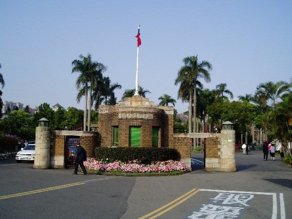

“AI가 만든 인용, 학술논문에 그대로 실렸다”… 대만 연구팀의 실태 조사
생성형 인공지능이 만들어낸 부정확한 인용과 존재하지 않는 참고문헌이 학술논문에 그대로 실린 사례를 분석한 연구가 대만에서 발표됐다. 문제의 핵심은 도구의 성능이 아니라 검증 절차의 공백에 있다는 것이 연구진의 결론이다.
강패산 기자 · 2026.08.18
橋사회

대만의 한 연구팀이 학술논문에서 인공지능의 잘못된 사용 사례를 분석한 결과를 내놓았다. 생성형 AI가 만들어낸 인용 정보가 확인 절차 없이 논문에 포함된 사례가 확인됐다는 내용이다.
광고 문의 · 300×250대표적인 유형은 세 가지로 정리된다. 실재하지 않는 논문을 참고문헌으로 제시한 경우, 실재하는 논문이지만 내용과 무관한 주장을 근거로 인용한 경우, 그리고 저자와 발행 연도가 뒤섞인 경우다.
이런 오류가 발생하는 이유는 생성형 모델의 작동 방식에 있다. 언어 모델은 그럴듯한 형태의 문자열을 생성하도록 학습돼 있어, 서지 정보처럼 형식이 정형화된 항목에서 특히 실재하지 않는 조합을 만들어내기 쉽다.
연구진이 강조한 것은 도구의 한계보다 검증 절차다. 인용 확인은 원래 저자와 심사자의 기본 업무였고, AI 사용 여부와 무관하게 수행돼야 하는 절차다. 문제는 그 절차가 생략되는 빈도가 늘었다는 데 있다.
학술지들은 대응을 시작했다. AI 사용 사실을 명시하도록 요구하는 정책이 확산됐고, 참고문헌 자동 대조 도구를 심사 과정에 도입하는 사례도 늘고 있다.
이 문제는 학계에만 국한되지 않는다. 언론과 법률 문서, 행정 자료에서도 같은 유형의 오류가 보고돼 왔다. 형식이 정확할수록 오류를 발견하기 어렵다는 점이 공통된 어려움이다.
연구진은 후속 과제로 학문 분야별 발생 빈도의 차이를 제시했다. 인용 관행과 심사 방식이 분야마다 다르기 때문이다.
출처·참고 (사실 확인용 — 본문은 직접 재작성)
· Taipei Times·Liberty Times (2026.08.17~18)
· Taipei Times·Liberty Times (2026.08.17~18)